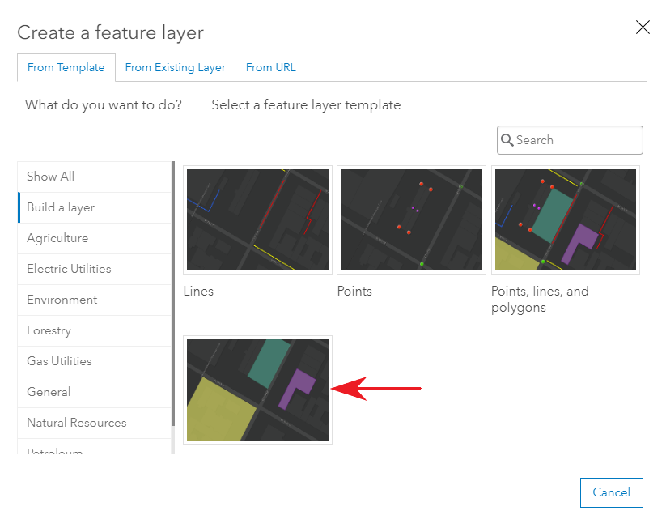
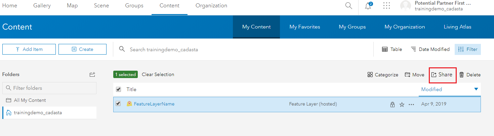
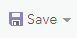

Purpose
This page will explain how to create a new Cadasta project in ArcGIS Online (AGOL) for use with the Collector and Survey12s mobile apps.
Requirements
- You will need to have a username and password set up for you by a Cadasta team member. If you do not have a user please contact support@cadasta.org
- You will need to sign to your account - see Introduction to your account for a reminder
- You will need to install Survey123 Connect for ArcGIS
Steps
Step 1: Creating a New Feature Layer
Log in to your account in AGOL and navigate to Content, My Content:

Create a new Feature Layer by selecting Create

Select Feature Layer

Select Build a Layer

- Select Polygon and Create 
Select Create

Select Next and Next
Enter a Title and make sure the Tags has at least the “Data Collection” tag included. Other information is optional.
- Select Done
Step 2: Sharing a Feature Layer
Navigate to the newly created Feature Layer by selecting Content, My Content, and finding the new feature Note: Do not attempt to do this via the Feature Layer’s Item Description Page
Check the box next to the Feature Layer

Select Share 
Select Access and update capabilities
Select your organization’s User Group and Check the box
Select OK
Step 3: Creating a New Web Map
Navigate to the Map Viewer by clicking Map from the top bar

Select Details to navigate to About, Content, and Legend sections.
Select Content to view layers (and Layer Options)

Select the Layer Options to access Show Legend, Show Table, Change Style, Filter, Perform Analysis, and More Options
Select Add to add layers to a map
Note: There are multiple options for adding data layers to the map: Search for Layers, Browse Living Atlas Layers, Add Layer from Web, Add Layer from File, and Add Map Notes

On the ribbon, click the Add button and choose Search for Layer
Note: A default list of search results appears.

Type in the search box. Search for the newly created Polygon Feature Layer
Note: You are able to limit the search results.

In the list of results, locate your search result
Click Add (or the plus icon) to add the layer to the map
Note: You can add as many layers as you would like.

At the top of the search pane, click the Back button.
Note: The layers are drawn, with their default symbols, in the order in which they were loaded into the map.
Save your map. On the ribbon, click the Save button and choose Save.

To change or add a Basemap, navigate to the top of the Details pane and click the Content button.
If necessary, click the Basemap button on the ribbon and choose a basemap.
Click the Save button and choose Save.
Step 4: Sharing a Web Map for Offline Use
In the web map you created, select the About tab and then select the “More Details” link to open the item information page.

Select the Settings tab and scroll down to the Web Map section.
Ensure that the “Use in Collector for ArcGIS” checkbox is checked. If not, check it and then press the “Save” button.
Step 5: Creating a Survey Form
Open the Survey123 Connect for ArcGIS application.
Create a new XLSForm (survey) in Survey123 Connect, using Excel
Add all your desired questions and choices.
Navigate to the end of your survey form in Excel
Add the following lines in the appropriate columns
Note: Copying and pasting each cell is best practice until you have a working survey template for your organization.

Select Save
- Publish your survey